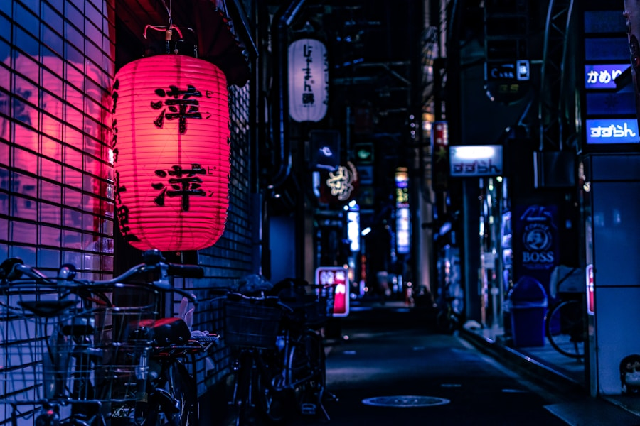
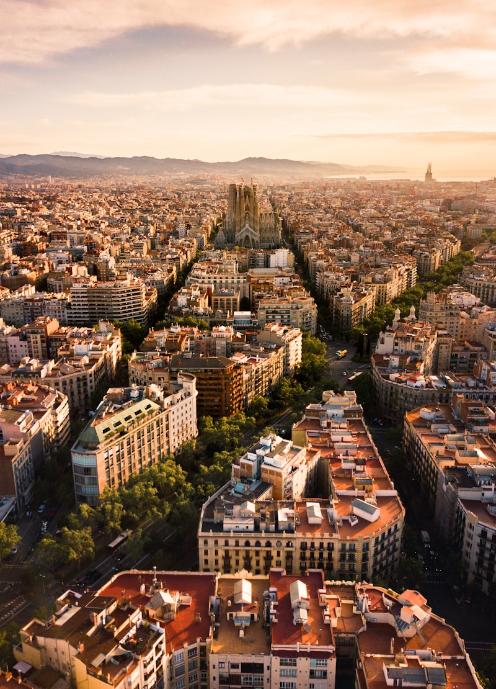
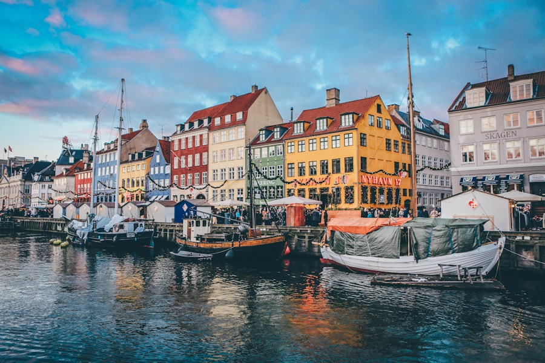
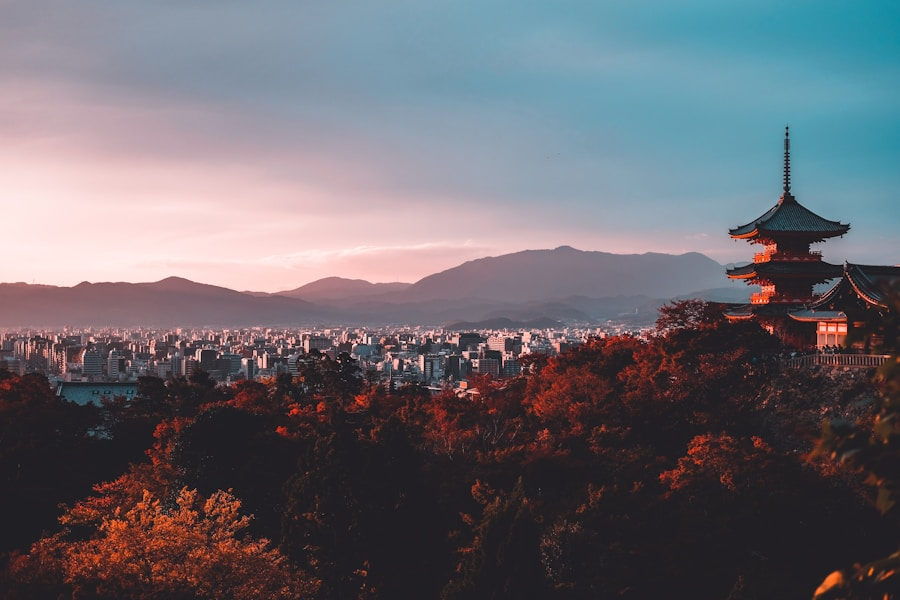
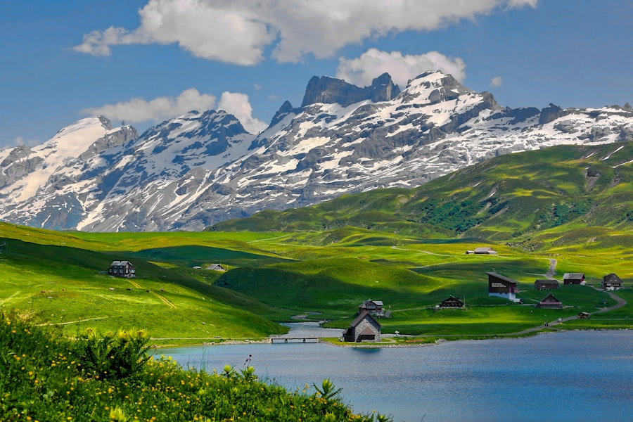

京都 · 晨雾庭院
私人茶道与苔庭导览，仅限四席。
Private Journeys · 2026
为小屏幕而写的旅程编辑：少即是多，留白是奢侈。每一次滑动，都是一封未寄出的明信片。
Next departure
峡湾 · 三天两夜
Curated Grid
不对称的栅格在手机上落成温柔的序列：每一格都有自己的呼吸节奏。

私人茶道与苔庭导览，仅限四席。
玻璃穹顶，恒温甲板，摄影师同行。

直升机接驳可选。全程礼宾。

Limited · Spring
电动自行车、品酒师、日落野餐。移动与停顿都经过排练。
Stays

仅六间房。港口步行三分钟。

雪线之上，私人理疗师驻店。
横向滑动，像在火车站台读小说。
礼宾会在 24 小时内回复。无模板邮件。